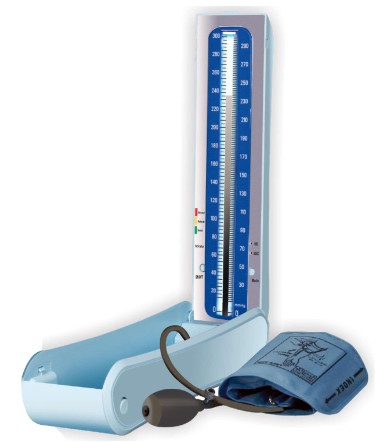

ESFIGMOMANÔMETROS de medição não invasiva.
| Esfigmomanômetros com coluna de mercúrio. |
Esfigmomanômetros |
|---|---|
| Situação: Proíbido no Brasil. | Situação: Certificação Compulsória. |
| RDC n.º 922 de 19/09/2024 | Por a portaria aqui |
|  | O certificado pela portaria 384, só poderá ser emitido após a obtenção da Portaria de Aprovação de Modelo publicada pelo Inmetro. [RAC - 6.2.6.1.1] |
ESFIGMOMANÔMETROS de medição invasiva.